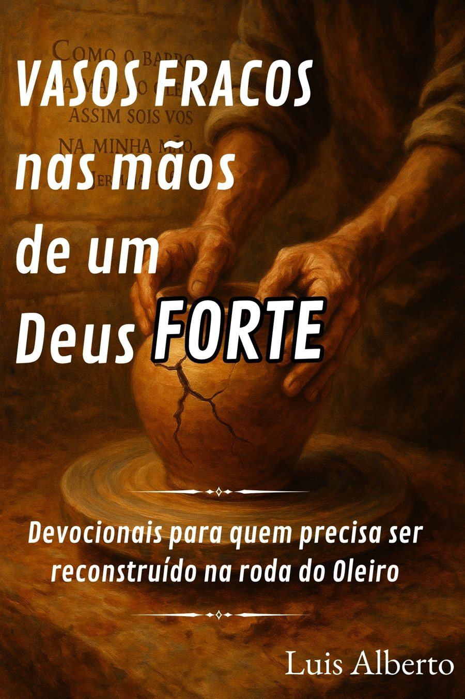

Receba o livro
Leve o livro para a sua casa
Peça o seu exemplar de Vasos fracos nas mãos de um Deus forte e comece a leitura ainda esta semana.
Devocionais para quem precisa ser reconstruído na roda do Oleiro.
O capítulo grátis traz a Introdução e o capítulo 1, em PDF + UM PRESENTE SURPRESA.

Ele não junta os cacos numa pá e joga fora.Do capítulo 7, “Sorria, Deus está te vendo”
Em Jeremias 18, Deus manda o profeta descer à casa de um oleiro. Lá, um vaso se quebra nas mãos do artesão, que junta o barro e faz outro vaso.
Este livro acompanha essa cena ao lado de Maria Madalena, Pedro, os discípulos de Emaús, a mulher apanhada em adultério, a samaritana e José do Egito. Cada capítulo fala de ouvir a voz de Deus, de descer, de esperar e de confiar quando o vaso rachou.
É um livro para ler aos poucos, com a Bíblia aberta, e para quem hoje só enxerga cacos no espelho.
Comece pela Introdução, com a história do menino que acreditava que a bota vermelha era de aço, e siga até o fim do capítulo 1, “Por falar de vasos”.
Peça o seu exemplar de Vasos fracos nas mãos de um Deus forte e comece a leitura ainda esta semana.